Image Gallery
 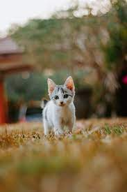
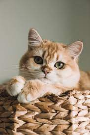
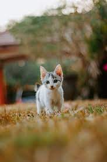
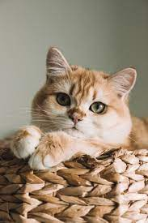

 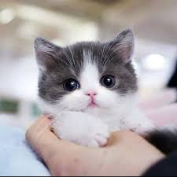
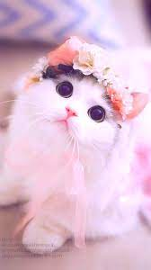
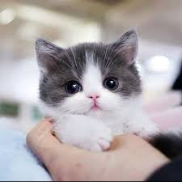
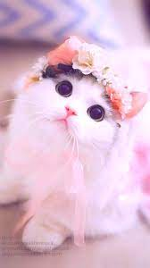
“Like all pure creatures, cats are practical.”
The earliest known association between cats and humans dates possibly as far back as the origins of agriculture in the Middle East, about 9,500 years ago. A cat skeleton accompanying that of a human dated to that time was discovered in southern Cyprus. Although some sources note that this finding suggests that cats had undergone some degree of domestication in that location, other sources (citing evidence that the cat genome did not differ that much from that of the African wildcat during this period) argue that cats may have domesticated themselves by choosing to live in human-altered landscapes.
Cats have long been known to other cultures. Wall tiles in Crete dating from 1600 BCE depict hunting cats. Evidence from art and literature indicates that the cat was present in Greece from the 5th century BCE, and tiles featuring cats appeared in China from 500 BCE. In India cats were mentioned in Sanskrit writings around 100 BCE, while the Arabs and the Japanese were not introduced to the cat until about 600 CE. The earliest record of cats in Britain dates to about 936 CE, when Howel Dda, prince of south-central Wales, enacted laws for their protection.
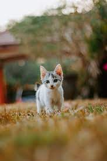
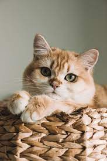
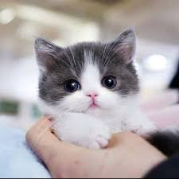
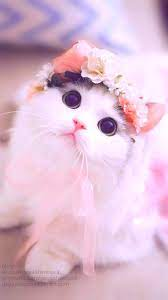
| game name | explanation |
|---|---|
| Fetch | You may be surprised to discover that many cats love to play fetch, or chase after the ball you throw. This stimulates the part of their brain they would use to catch prey. First, get the attention of your fur baby by calling their name and showing them a ball or toy you know they love. Toss the chosen object and you should see your cat leaping around trying to retrieve it. Call them back and always make sure you have a treat to reward their behaviour. They may eventually learn to return the ball back to you after some practice. |
| Food Play | Puzzle feeders are a great method to use on your cat as they have a desire to hunt and work for their food. Food is naturally motivating, so the whole process of receiving food through a puzzle is rewarding for your furry friend. Start with a simple puzzle filled with food so that the cat doesn’t get frustrated and you can slowly work your way up to harder puzzles. This can be done with food dispenser balls or you could make your own food puzzle. Shop our naturals range for the perfect treats to hide inside. |
| Catnip | Catnip can be used to encourage your cat to behave in a positive manner and sometimes reduce their anxiety levels. If your cat needs a bit more exercise, add a little catnip to their favourite toys to make playing even more interesting. Most cats react to catnip by rolling, flipping and rubbing. Use this every so often to make playtime more exciting, but don’t go overboard. |
| Chasing Prey | Using a toy on a string and simulating the movements of prey will give your cat a fun and interactive play time with their paw-rents. This will build a bond between you and your feline, while improving your cat’s health with all the jumping and bouncing they will be doing attempting to catch their toy. This playtime is sure to tire your cat out. |